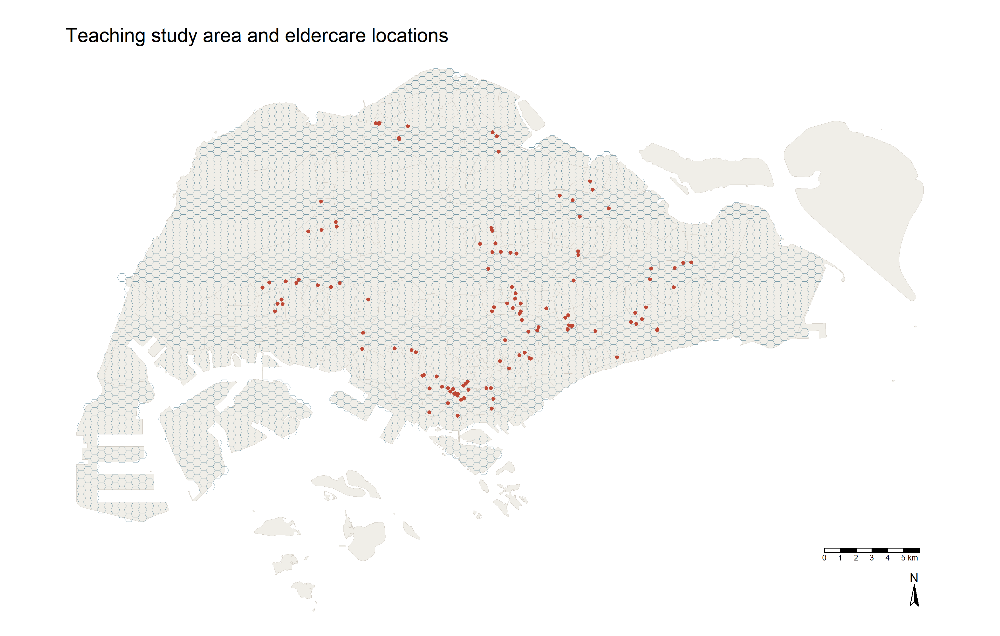
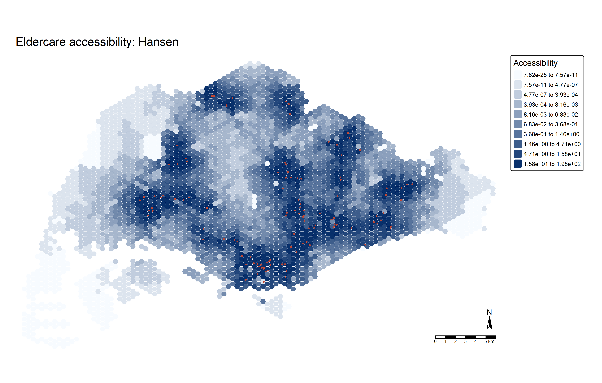
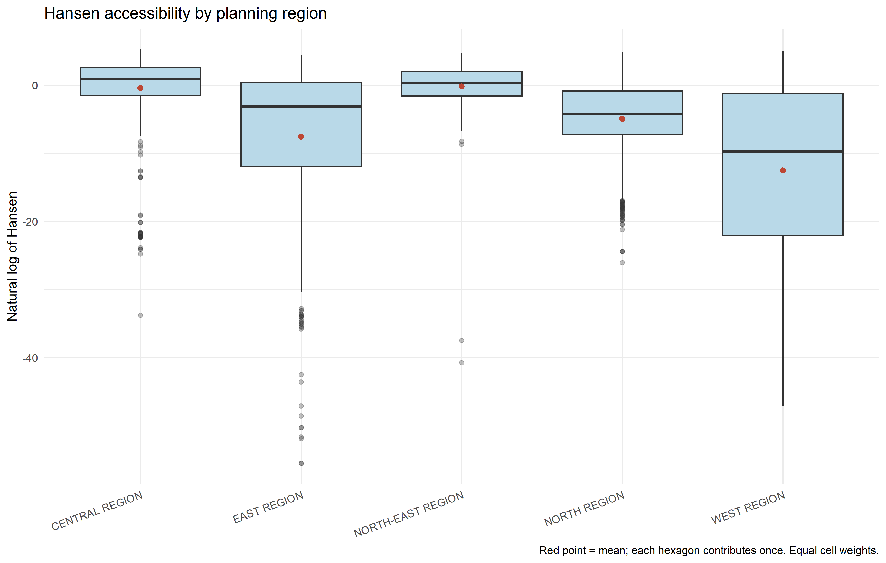
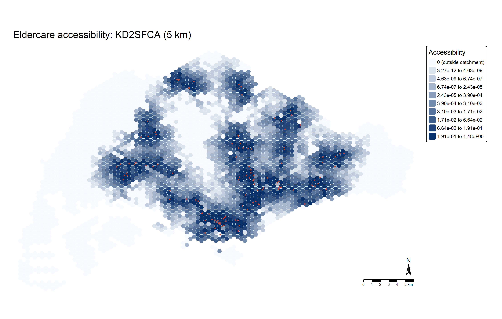
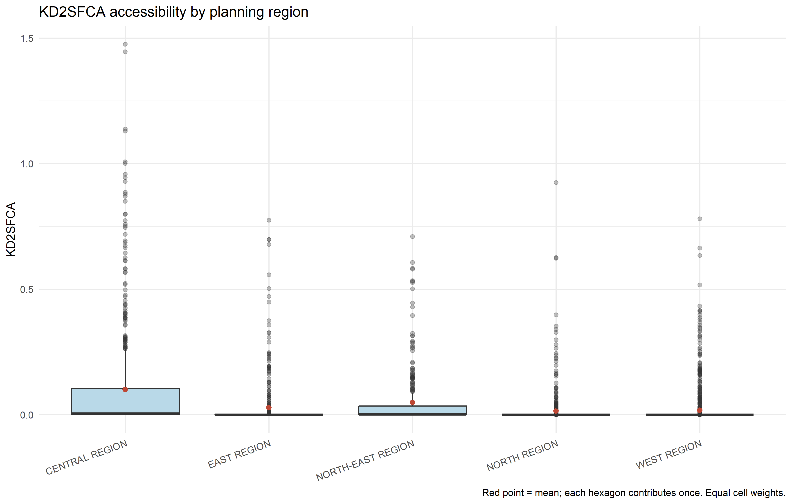
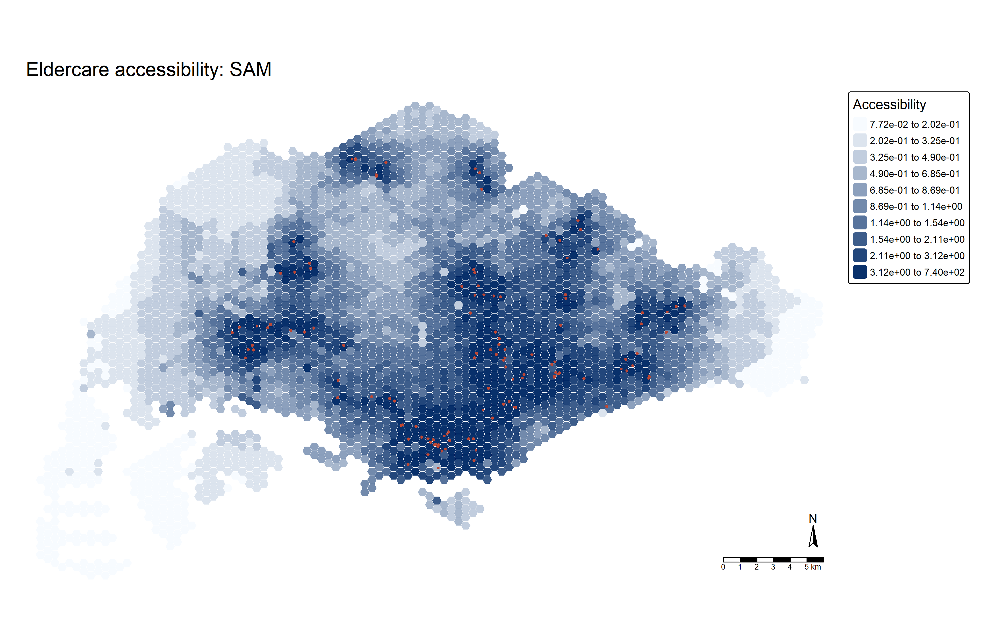
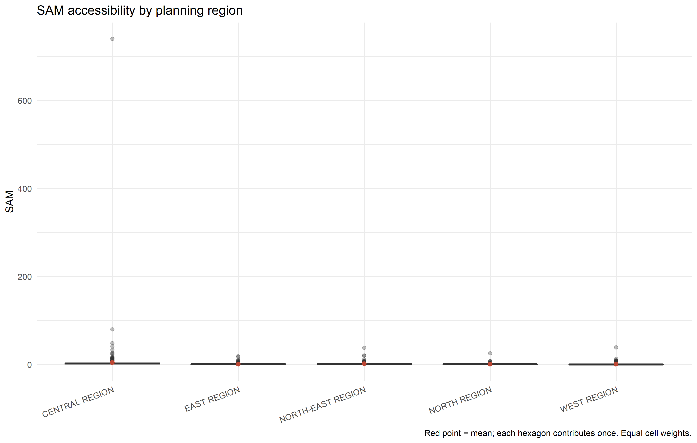

library(sf)
library(dplyr)
library(readr)
library(tidyr)
library(SpatialAcc)
library(tmap)
library(ggplot2)
tmap_mode("plot")
theme_set(theme_minimal(base_size = 12))
dir.create("handson7/results", recursive = TRUE, showWarnings = FALSE)Hands-on Exercise 7
Modelling Geographical Accessibility · Eldercare services in Singapore
1. Introduction
This exercise follows Chapter 17: Modelling Geographical Accessibility. I compare three ways of measuring access to eldercare services in Singapore: Hansen potential, kernel-density two-step floating catchment area (KD2SFCA), and the Spatial Accessibility Measure (SAM). The question is how the choice of distance decay and treatment of competing demand changes the pattern of access.
The workflow imports and validates spatial layers, aligns a road-network distance matrix to feature IDs, calculates accessibility, maps the results, and compares their distributions across planning regions. All results below are calculated from the downloaded teaching inputs.
2. Data and study assumptions
I use the instructor’s original teaching data at a pinned Git revision. The inputs comprise 2014 subzone boundaries, a hexagonal study grid, historical eldercare locations, and an origin–destination road-distance table. Data provenance and acquisition notes and file checksums accompany this exercise.
To reproduce the work from the coursework project root:
source("handson7/R/download-data.R")
system2("quarto", c("render", "handson7/index.qmd"))Alternatively, run quarto render handson7/index.qmd in a terminal after downloading the inputs. The render requires the packages loaded above, plus knitr and rmarkdown; it does not install packages automatically.
NoteIllustrative access, with historical inputs
Each hexagon is assigned demand 100, and every facility capacity 100. These are modelling assumptions, not measurements of older residents or available places. The facility layer contains records dated 2016; the exercise therefore describes a historical teaching scenario and cannot identify current service shortages. The road network date and routing settings are not supplied. The course handout describes conditions on reuse of its specially prepared datasets; the raw files remain local.
Import, project and check the spatial layers
All layers are transformed to SVY21 / Singapore TM (EPSG:3414), with coordinates in metres. Invalid polygon geometries are repaired before spatial operations. I retain stable feature IDs and verify uniqueness and expected counts.
manifest <- read_csv("handson7/data/input-checksums.csv", show_col_types = FALSE)
stopifnot(identical(unname(tools::md5sum(file.path("handson7/data/raw", manifest$file))),
manifest$md5))
read_layer <- function(name) {
st_read(file.path("handson7/data/raw/geospatial", paste0(name, ".shp")), quiet = TRUE) |>
st_transform(3414) |>
st_make_valid()
}
mpsz <- read_layer("MP14_SUBZONE_NO_SEA_PL")
hexagons <- read_layer("hexagons") |> select(fid) |> mutate(demand = 100)
eldercare <- read_layer("ELDERCARE") |> select(fid, ADDRESSPOS) |> mutate(capacity = 100)
stopifnot(!anyDuplicated(hexagons$fid), !anyDuplicated(eldercare$fid),
nrow(mpsz) == 323, nrow(hexagons) == 3125, nrow(eldercare) == 120,
all(st_is_valid(mpsz)), all(st_is_valid(hexagons)),
st_crs(mpsz)$epsg == 3414, st_crs(eldercare)$epsg == 3414)
input_summary <- tibble(dataset = c("Subzones", "Hexagons", "Eldercare centres"),
features = c(nrow(mpsz), nrow(hexagons), nrow(eldercare)),
CRS = "EPSG:3414 (metres)")
knitr::kable(input_summary)| dataset | features | CRS |
|---|---|---|
| Subzones | 323 | EPSG:3414 (metres) |
| Hexagons | 3125 | EPSG:3414 (metres) |
| Eldercare centres | 120 | EPSG:3414 (metres) |
Study area and facility locations
tm_shape(mpsz) + tm_polygons(fill = "#f0eee8", col = "#d1cbc2", lwd = 0.5) +
tm_shape(hexagons) + tm_borders(col = "#7195a4", lwd = 0.25) +
tm_shape(eldercare) + tm_dots(fill = "#bd4734", col = "white", size = 0.25) +
tm_title("Teaching study area and eldercare locations") +
tm_scalebar() + tm_compass(type = "arrow", size = 1.5) +
tm_layout(frame = FALSE)
3. Prepare the road-distance matrix
The OD table has one row per origin–destination pair. Its total cost combines entry distance to the road, travel along the network, and exit distance to the facility. I check that these components sum to the total, that every pair occurs exactly once, and that every cost is finite and positive.
pivot_wider() creates the matrix, followed by explicit ID matching. This prevents a numerically valid calculation from silently assigning accessibility values to the wrong hexagons. Distances are divided by 1,000 to obtain kilometres; model settings must use these same units.
ODMatrix <- read_csv("handson7/data/raw/aspatial/OD_Matrix.csv", show_col_types = FALSE)
stopifnot(nrow(ODMatrix) == nrow(hexagons) * nrow(eldercare),
!anyDuplicated(ODMatrix[c("origin_id", "destination_id")]),
setequal(ODMatrix$origin_id, hexagons$fid),
setequal(ODMatrix$destination_id, eldercare$fid),
all(is.finite(ODMatrix$total_cost)), all(ODMatrix$total_cost > 0),
max(abs(ODMatrix$total_cost - ODMatrix$entry_cost -
ODMatrix$network_cost - ODMatrix$exit_cost)) < 0.01)
wide <- ODMatrix |>
select(origin_id, destination_id, total_cost) |>
pivot_wider(names_from = destination_id, values_from = total_cost)
# Match keys explicitly: never assume the GIS records have pivot-table order.
wide <- wide[match(hexagons$fid, wide$origin_id), ]
distmat_km <- as.matrix(wide[, as.character(eldercare$fid)]) / 1000
rownames(distmat_km) <- as.character(hexagons$fid)
stopifnot(identical(rownames(distmat_km), as.character(hexagons$fid)),
identical(colnames(distmat_km), as.character(eldercare$fid)),
!anyNA(distmat_km), all(is.finite(distmat_km)))
knitr::kable(tibble(OD_pairs = nrow(ODMatrix), origins = nrow(distmat_km),
destinations = ncol(distmat_km),
minimum_km = min(distmat_km), maximum_km = max(distmat_km)), digits = 3)| OD_pairs | origins | destinations | minimum_km | maximum_km |
|---|---|---|---|---|
| 375000 | 3125 | 120 | 0.037 | 56.351 |
4. Hansen potential accessibility
I inspect the installed SpatialAcc::ac() implementation as well as the package documentation. For the Hansen family, the package applies exponential decay, so this exercise uses
\[ A_i^{H}=\sum_j S_j\exp(-\beta d_{ij}),\qquad \beta=2\ \mathrm{km}^{-1}. \]
A nearby facility contributes more than a distant facility. This measure does not subtract the demand of other origins competing for the same facility. Despite the argument name power, the Hansen branch uses it as the exponential decay coefficient. I use 2 consistently for the main result; the handout also includes an alternative 0.5 setting, which I compare later.
hexagons$Hansen <- ac(hexagons$demand, eldercare$capacity, distmat_km,
power = 2, family = "Hansen")
# With equal supply, the package agrees with explicit exponential potential.
hansen_manual <- as.vector(exp(-2 * distmat_km) %*% eldercare$capacity)
stopifnot(isTRUE(all.equal(hexagons$Hansen, hansen_manual)))
access_map <- function(field, title) {
value <- hexagons[[field]]
has_zero <- any(value == 0)
breaks <- unique(as.numeric(quantile(value[value > 0],
probs = seq(0, 1, length.out = if (has_zero) 10 else 11))))
lower <- formatC(head(breaks, -1), format = "e", digits = 2)
upper <- formatC(tail(breaks, -1), format = "e", digits = 2)
labels <- paste(lower, upper, sep = " to ")
classes <- as.character(cut(value, breaks, labels = labels, include.lowest = TRUE))
if (has_zero) {
classes[value == 0] <- "0 (outside catchment)"
labels <- c("0 (outside catchment)", labels)
}
plot_data <- hexagons
plot_data$map_class <- factor(classes, levels = labels, ordered = TRUE)
stopifnot(!anyNA(plot_data$map_class))
palette <- grDevices::colorRampPalette(c("#f7fbff", "#08306b"))(length(labels))
tm_shape(plot_data) +
tm_polygons(fill = "map_class",
fill.scale = tm_scale_categorical(values = palette),
fill.legend = tm_legend(title = "Accessibility", text.size = 0.65),
col = "#ffffff", lwd = 0.1) +
tm_shape(eldercare) + tm_dots(fill = "#bd4734", col = "white", size = 0.18) +
tm_title(title) + tm_compass(type = "arrow", size = 1.5) + tm_scalebar() +
tm_layout(frame = FALSE, legend.outside = TRUE)
}
access_map("Hansen", "Eldercare accessibility: Hansen")
Maps use ten quantile classes for positive-only scores. KD2SFCA displays zero access separately, with nine quantile classes for positive scores. Scientific notation keeps tiny positive values distinct from zero (for example, 1e-6 means 0.000001). Colours show relative positions within each method; the numeric class boundaries differ between methods and do not establish a shared service standard.
Compare planning regions
A hexagon may intersect several subzones or regions. A plain intersection join can duplicate the cell and distort a boxplot. I dissolve subzones into planning regions, then assign each hexagon once to its region of largest polygon overlap.
# Assign each cell once, to the planning region with the largest overlap.
# Dissolving subzones first avoids duplicate cells from boundary intersections.
regions <- mpsz |> select(REGION_N) |> group_by(REGION_N) |> summarise()
regional_hex <- st_join(hexagons, regions, largest = TRUE)
stopifnot(nrow(regional_hex) == nrow(hexagons))
unmatched <- sum(is.na(regional_hex$REGION_N))
regional_hex$REGION_N[is.na(regional_hex$REGION_N)] <- "OUTSIDE BOUNDARY"
region_plot <- function(data, field, logarithm = FALSE) {
data$value <- data[[field]]
if (logarithm) data$value <- log(data$value)
ggplot(st_drop_geometry(data), aes(x = REGION_N, y = value)) +
geom_boxplot(fill = "#b9d9e8", outlier.alpha = 0.3) +
stat_summary(fun = mean, geom = "point", colour = "#bd4734", size = 2) +
labs(x = NULL, y = if (logarithm) paste("Natural log of", field) else field,
title = paste(field, "accessibility by planning region"),
caption = "Red point = mean; each hexagon contributes once. Equal cell weights.") +
theme(axis.text.x = element_text(angle = 20, hjust = 1))
}
region_plot(regional_hex, "Hansen", logarithm = TRUE)
The join leaves 0 cells without a planning-region overlap. Any such cells retain an explicit outside-boundary label. Each cell has equal statistical weight; these distributions are not population-weighted estimates. Logging the positive Hansen values makes small peripheral values visible without changing their rank.
5. KD2SFCA: access with competition
KD2SFCA uses two steps. First, each facility’s capacity is divided by its distance-weighted competing demand. Second, each origin sums the weighted supply-to-demand ratios of facilities it can reach. Here the catchment is 5 km, and the kernel is \(w_{ij}=\exp(-d_{ij}^{2})\) within that catchment, zero outside it.
\[ R_j=\frac{S_j}{\sum_k P_k w_{kj}},\qquad A_i^{K}=\sum_j R_jw_{ij}. \]
I verify the package output against an independent matrix calculation. As an additional numerical check, demand-weighted accessibility sums to total supplied capacity when every facility has positive weighted demand.
hexagons$KD2SFCA <- ac(hexagons$demand, eldercare$capacity, distmat_km,
d0 = 5, power = 2, family = "KD2SFCA")
# Independent two-step calculation: competing demand then origin access.
weights <- exp(-(distmat_km^2)) * (distmat_km <= 5)
weighted_demand <- colSums(weights * hexagons$demand)
stopifnot(all(weighted_demand > 0))
ratios <- eldercare$capacity / weighted_demand
kd_manual <- as.vector(weights %*% ratios)
stopifnot(isTRUE(all.equal(hexagons$KD2SFCA, kd_manual)),
abs(sum(hexagons$demand * hexagons$KD2SFCA) - sum(eldercare$capacity)) < 1e-6)
access_map("KD2SFCA", "Eldercare accessibility: KD2SFCA (5 km)")
regional_hex$KD2SFCA <- hexagons$KD2SFCA
region_plot(regional_hex, "KD2SFCA")
Relative to Hansen, the key change is competition: a facility surrounded by many nearby origins shares its supply across more demand. Because demand is held constant per cell, this competition reflects the grid geometry and routing distances rather than actual population density.
6. Spatial Accessibility Measure (SAM)
SAM scales inverse-square potential by the demand of the origin:
\[ A_i^{S}=\frac{1}{P_i}\sum_j\frac{S_j}{d_{ij}^{2}}. \]
The installed package’s SAM branch does not use d0. I omit that argument and verify that adding d0 = 5 produces identical values. Thus SAM here includes all facilities, whereas KD2SFCA excludes those beyond its catchment. Very small distances can strongly influence SAM, so I check for zero distances before calculating it.
hexagons$SAM <- ac(hexagons$demand, eldercare$capacity, distmat_km,
power = 2, family = "SAM")
sam_manual <- rowSums(sweep(1 / distmat_km^2, 2, eldercare$capacity, `*`)) /
hexagons$demand
stopifnot(isTRUE(all.equal(hexagons$SAM, unname(sam_manual))),
identical(hexagons$SAM, unname(ac(hexagons$demand, eldercare$capacity,
distmat_km, d0 = 5, power = 2, family = "SAM"))))
access_map("SAM", "Eldercare accessibility: SAM")
regional_hex$SAM <- hexagons$SAM
region_plot(regional_hex, "SAM")
SAM’s demand adjustment is local to the origin; it does not represent the same shared-facility competition as KD2SFCA. Equal demand and capacity make the SAM calculation equivalent to summing inverse-square distances, which makes this a useful distance-decay comparison.
7. Compare the results
Regional summaries and ranking agreement
methods <- c("Hansen", "KD2SFCA", "SAM")
scores <- st_drop_geometry(regional_hex) |> select(fid, REGION_N, all_of(methods))
stopifnot(all(vapply(scores[methods], function(x) all(is.finite(x) & x >= 0), logical(1))))
regional_summary <- scores |>
pivot_longer(all_of(methods), names_to = "method", values_to = "accessibility") |>
group_by(REGION_N, method) |>
summarise(cells = n(), mean = mean(accessibility), median = median(accessibility),
minimum = min(accessibility), maximum = max(accessibility), .groups = "drop")
knitr::kable(regional_summary |> select(REGION_N, method, cells, mean, median) |>
mutate(across(c(mean, median), ~ formatC(.x, format = "g", digits = 4))))| REGION_N | method | cells | mean | median |
|---|---|---|---|---|
| CENTRAL REGION | Hansen | 606 | 13.16 | 2.468 |
| CENTRAL REGION | KD2SFCA | 606 | 0.1009 | 0.004479 |
| CENTRAL REGION | SAM | 606 | 4.591 | 2.321 |
| EAST REGION | Hansen | 498 | 3.883 | 0.04345 |
| EAST REGION | KD2SFCA | 498 | 0.02806 | 3.951e-09 |
| EAST REGION | SAM | 498 | 1.185 | 0.7894 |
| NORTH REGION | Hansen | 621 | 2.14 | 0.01458 |
| NORTH REGION | KD2SFCA | 621 | 0.01473 | 2.424e-11 |
| NORTH REGION | SAM | 621 | 0.9018 | 0.7176 |
| NORTH-EAST REGION | Hansen | 320 | 7.709 | 1.418 |
| NORTH-EAST REGION | KD2SFCA | 320 | 0.04964 | 0.0009169 |
| NORTH-EAST REGION | SAM | 320 | 2.149 | 1.764 |
| WEST REGION | Hansen | 1080 | 2.993 | 5.931e-05 |
| WEST REGION | KD2SFCA | 1080 | 0.01836 | 0 |
| WEST REGION | SAM | 1080 | 0.8622 | 0.4031 |
rank_correlations <- cor(scores[methods], method = "spearman")
knitr::kable(rank_correlations, digits = 3, caption = "Spearman rank correlations")| Hansen | KD2SFCA | SAM | |
|---|---|---|---|
| Hansen | 1.000 | 0.962 | 0.950 |
| KD2SFCA | 0.962 | 1.000 | 0.909 |
| SAM | 0.950 | 0.909 | 1.000 |
best_regions <- regional_summary |> group_by(method) |> slice_max(median, n = 1, with_ties = FALSE)
worst_regions <- regional_summary |> group_by(method) |> slice_min(median, n = 1, with_ties = FALSE)By regional median, the highest-scoring regions are Hansen: CENTRAL REGION; KD2SFCA: CENTRAL REGION; SAM: CENTRAL REGION. The lowest are Hansen: WEST REGION; KD2SFCA: WEST REGION; SAM: WEST REGION. These statements describe this executed scenario and its equal-cell weighting.
The rank correlations compare the ordering of cells without treating the three score scales as interchangeable. A high correlation means the methods identify broadly similar relative patterns, while differences show the effects of decay and competition. Means and medians need not agree when a few cells lie very close to facilities.
Sensitivity to catchment and decay
sensitivity <- bind_rows(lapply(c(3, 5, 8), function(cutoff) {
value <- ac(hexagons$demand, eldercare$capacity, distmat_km,
d0 = cutoff, power = 2, family = "KD2SFCA")
tibble(catchment_km = cutoff, zero_access_cells = sum(value == 0),
median = median(value), max = max(value),
rank_correlation_to_5km = cor(value, hexagons$KD2SFCA, method = "spearman"))
}))
knitr::kable(sensitivity |>
mutate(across(c(median, max, rank_correlation_to_5km),
~ formatC(.x, format = "g", digits = 4))))| catchment_km | zero_access_cells | median | max | rank_correlation_to_5km |
|---|---|---|---|---|
| 3 | 1963 | 0 | 1.476 | 0.8979 |
| 5 | 1281 | 3.255e-08 | 1.476 | 1 |
| 8 | 788 | 3.255e-08 | 1.476 | 0.9727 |
hansen_slow <- ac(hexagons$demand, eldercare$capacity, distmat_km,
power = 0.5, family = "Hansen")
hansen_rank_cor <- cor(hansen_slow, hexagons$Hansen, method = "spearman")
write_csv(scores, "handson7/results/accessibility-by-hexagon.csv")
write_csv(regional_summary, "handson7/results/regional-summary.csv")
write_csv(sensitivity, "handson7/results/catchment-sensitivity.csv")
write_csv(as.data.frame(rank_correlations) |> tibble::rownames_to_column("method"),
"handson7/results/rank-correlations.csv")At the 5 km KD2SFCA catchment, 1281 cells have zero modelled access. This means no supplied facility falls inside that road-distance catchment; it does not prove residents have no real-world service options. Increasing a catchment changes both reachable supply and competing demand, so an individual score need not increase monotonically.
The Spearman correlation between Hansen decay settings 0.5 and 2 is 0.952. The kernel in the KD2SFCA calculation already downweights distances rapidly before the 5 km boundary, which helps interpret whether the catchment sensitivity table shows large or small changes.
8. Reflection and limitations
Accessibility depends on the question being asked. Hansen measures nearby opportunity, SAM adjusts inverse-distance opportunity for local demand, and KD2SFCA explicitly shares facilities across competing origins. Their absolute scores have different meanings, so I compare maps and rankings alongside regional summaries.
The strongest methodological lessons are to align matrix IDs explicitly, check projected units before choosing decay parameters, and avoid duplicate polygon assignments when summarising regions. Inspecting the actual package also prevents an unused argument from being mistaken for a model restriction.
For a practical eldercare study, I would replace the constant demand with older-resident counts, replace capacity with observed service availability, refresh the facility inventory, and use travel times appropriate to the transport options of older residents. Operating hours, affordability, eligibility and barriers within a hexagon also affect access. The current maps support learning the methods, rather than a recommendation to relocate or close facilities.
9. Reproducible outputs
- Download and verify inputs
- Executed analysis code
- Hexagon accessibility values
- Regional summaries
- Catchment sensitivity
- Rank correlations
sessionInfo()R version 4.5.3 (2026-03-11 ucrt)
Platform: x86_64-w64-mingw32/x64
Running under: Windows 11 x64 (build 26300)
Matrix products: default
LAPACK version 3.12.1
locale:
[1] LC_COLLATE=English_United States.utf8
[2] LC_CTYPE=English_United States.utf8
[3] LC_MONETARY=English_United States.utf8
[4] LC_NUMERIC=C
[5] LC_TIME=English_United States.utf8
time zone: Asia/Shanghai
tzcode source: internal
attached base packages:
[1] stats graphics grDevices utils datasets methods base
other attached packages:
[1] ggplot2_4.0.3 tmap_4.4-1 SpatialAcc_0.1-6 tidyr_1.3.2
[5] readr_2.2.0 dplyr_1.2.1 sf_1.1-3
loaded via a namespace (and not attached):
[1] gtable_0.3.6 xfun_0.60 raster_3.6-32
[4] htmlwidgets_1.6.4 lattice_0.22-9 tzdb_0.5.0
[7] vctrs_0.7.3 tools_4.5.3 crosstalk_1.2.2
[10] generics_0.1.4 parallel_4.5.3 tibble_3.3.1
[13] proxy_0.4-29 pkgconfig_2.0.3 KernSmooth_2.23-26
[16] data.table_1.18.6.1 RColorBrewer_1.1-3 S7_0.2.2
[19] leaflet_2.2.3 lifecycle_1.0.5 farver_2.1.2
[22] compiler_4.5.3 terra_1.9-50 codetools_0.2-20
[25] leafsync_0.1.0 leaflegend_1.2.8 stars_0.7-3
[28] htmltools_0.5.9 class_7.3-23 yaml_2.3.12
[31] crayon_1.5.3 pillar_1.11.1 classInt_0.4-11
[34] lwgeom_0.2-17 wk_0.9.5 abind_1.4-8
[37] tidyselect_1.2.1 digest_0.6.39 purrr_1.2.2
[40] labeling_0.4.3 fastmap_1.2.0 grid_4.5.3
[43] colorspace_2.1-3 cli_3.6.6 logger_0.4.3
[46] magrittr_2.0.5 maptiles_0.12.0 base64enc_0.1-6
[49] XML_3.99-0.24 cols4all_0.10 leafem_0.2.5
[52] e1071_1.7-17 withr_3.0.3 scales_1.4.0
[55] bit64_4.8.6 sp_2.2-3 rmarkdown_2.31
[58] bit_4.6.0 otel_0.2.0 png_0.1-9
[61] hms_1.1.4 evaluate_1.0.5 knitr_1.51
[64] tmaptools_3.3 s2_1.1.12 rlang_1.3.0
[67] Rcpp_1.1.2 glue_1.8.1 DBI_1.3.0
[70] vroom_1.7.1 jsonlite_2.0.0 R6_2.6.1
[73] spacesXYZ_1.6-0 units_1.0-1